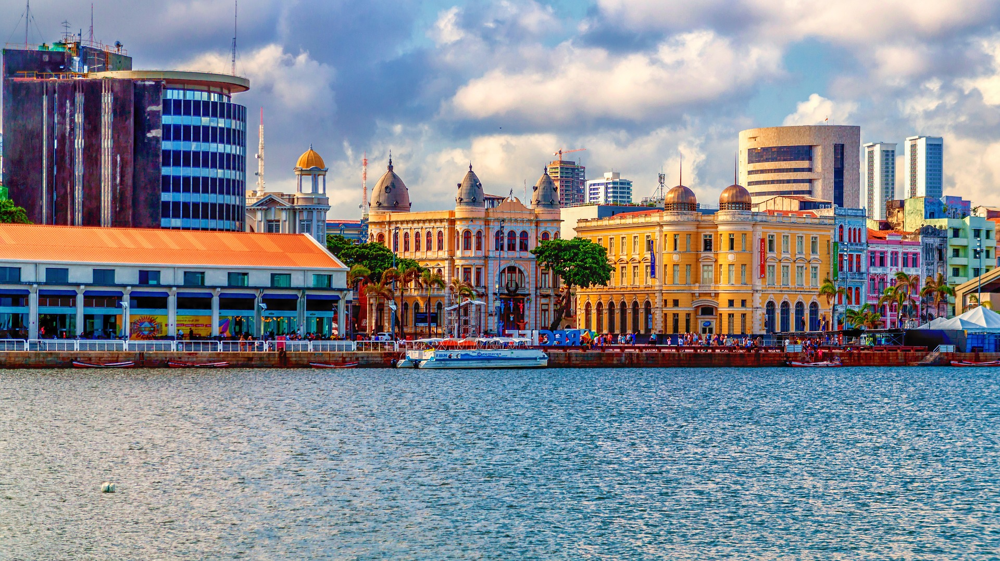
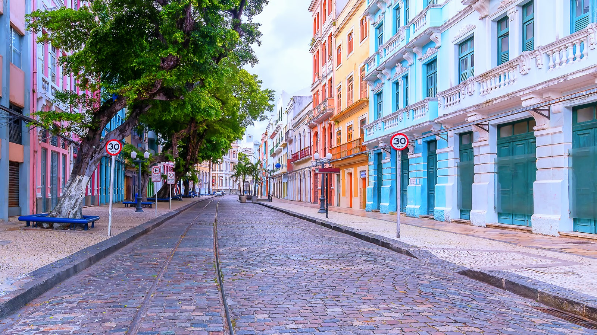
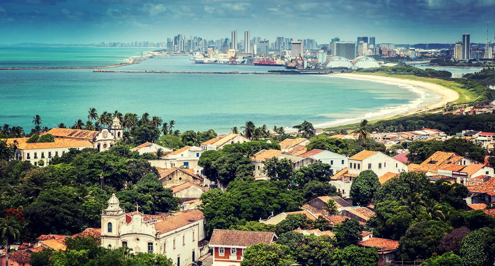

- 
- 
-

- 
Valorização do turismo histórico e cultural.
Desde sempre, a elite brasileira movida pelo europeísmo de ser tem em seu ideário viagens com destino aos países do chamado Primeiro Mundo, Itália França, Inglaterra, França, Espanha etc..., dizendo-se em busca de novas culturas e conhecimentos. No entanto, insiste em não enxergar a grandiosidade e a diversidade cultural existente dentro do próprio Estado.
Com a chegada da Corte ao Rio de Janeiro em 1808, o avanço da arte e da ciência no país foi significativo. Foram construídos diversos teatros, universidades, jardim botânico e o palácio onde residia a família real, hoje mais conhecido como o Museu Nacional. No entanto, um dos grandes desafios que o país enfrenta na atualidade, é sobre como conservar esses patrimônios históricos, pois a falta de investimento pelas autoridades e a desvalorização da arte pela sociedade implicam em perdas irreparáveis para a história do Brasil.
Junto com uma cultura que tem como costume as preferências por atrativos artísticos de outros países e lugares como o shopping.
Diante dessa premissa, é certo valorizar a cultura popular, haja vista que ela e tão importante quanto à literatura, a arte plástica, a arquitetônica etc. Foi através da cultura popular que pesquisas antropológicas e sociológicas chegaram a diversas características de nossos antepassados. Pois, a identidade de um povo está na sua cultura. Podemos entender como tudo aquilo que é construído pelo ser humano. Inclui os mitos, símbolos, ritos, todas as crenças, todo o conjunto de conhecimentos e todo o comportamento etc. Portanto, conhecer e valorizar a nossa cultura são auto-afirmações do que somos.
A cultura pode ser vista e entendida de diversas formas. Segundo a tradução literal do latim, a palavra cultura significa “cultivar”. Cultura é basicamente tudo aquilo que resulta da criação humana, como idéias, costumes, artefatos, leis, crenças morais, conhecimento e todos os hábitos e aptidões adquiridas pelo ser humano. A cultura popular é um conjunto de elementos culturais específicos da sociedade de uma nação ou país. Cultura organizacional é o conjunto de valores, crenças, rituais e normas adotados por uma determinada organização. Já de acordo com a filosofia, cultura e o conjunto de manifestações humanas que contrastam com a natureza ou o comportamento natural. Ela começou a ganhar importância para a economia por conta dos processos de globalização e de grande fluxo de informação e produtos. O ministério da cultura lançou 6 volumes de um atlas que mostra quanto a riqueza do Brasil advém do setor cultural. O banco mundial estima que a cadeia reprodutiva da cultura foi responsável por 7% do PIB do Brasil. Um grande problema para a valorização do turismo cultural é a depredação do patrimônio histórico. Esse comportamento criminoso e anti-social é uma demonstração de incivilidade, falta de educação e de incultura. O Patrimônio Público é o conjunto de bens e direitos que pertence a todos, ou seja, os custos de reposição dos equipamentos ou de reparação dos danos no patrimônio coletivo são arrecadados pela administração pública, com a aplicação dos impostos e taxas cobrados da sociedade. Para que esse problema seja combatido é preciso campanhas de conscientização e aplicação de segurança pública, entre outros meios de melhoria. Atualmente é claro a necessidade de valorizar a cultura popular, em vista que ela é tão importante quanto à literatura, a arte plástica, a arquitetônica etc.